Machine Learning Model Evaluation Metrics
Now let's talk about some of the metrics we can look at to evaluate our models. We'll start with binary classification and then move to regression models.
Binary Classification Evaluation
Confusion Matrix
Let's take the example of binary classification with spam email detection.
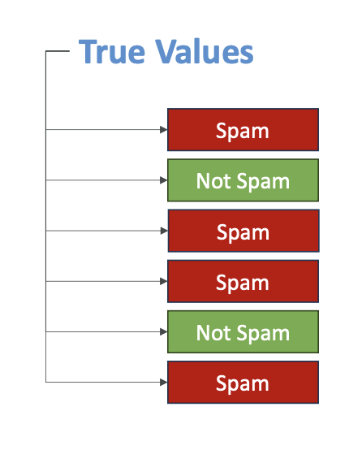
We have the true values from our labeled data - whether an email is spam or not spam. Our model makes predictions, and we can compare these predictions to the actual labels.
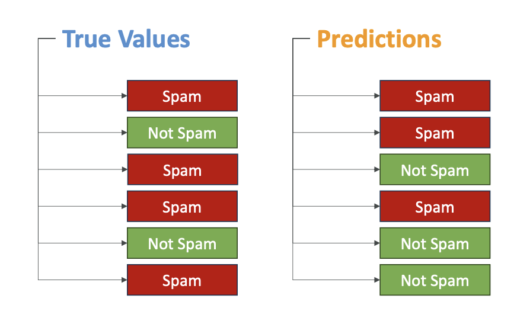
For example (Look into the image above):
- First email: correctly classified as spam ✓
- Second email: predicted spam, but actually wasn't spam ✗
- Third email: wrong prediction ✗
- Fourth email: correct prediction ✓
- Fifth email: correct prediction ✓
- Sixth email: wrong prediction ✗
We can compare the true values with what our model predicted and create what's called a confusion matrix.
Confusion Matrix Structure
A confusion matrix looks at the predictive value (positive for spam, negative for not spam) and compares it to the actual value from our training dataset:
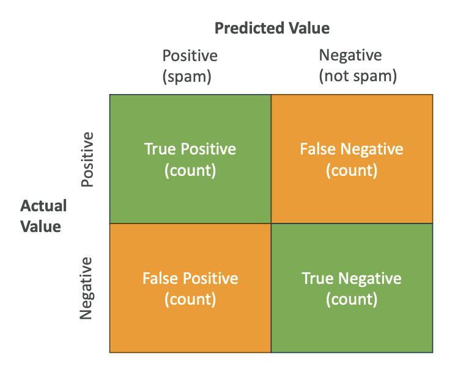
- True Positives (top-left): Predicted positive and actual value was positive
- False Negatives (top-right): Predicted not spam, but actually was spam
- False Positives (bottom-left): Predicted spam, but actually wasn't spam
- True Negatives (bottom-right): Predicted not spam and actually was not spam
We want to maximize true positives and true negatives while minimizing false positives and false negatives.
How do we create this matrix?
To create this matrix, we look at our datasets (for example, 10,000 items we trained and predicted on) and count how many fall into each category.
Classification Metrics
From the confusion matrix, we can compute several metrics:
1. Precision
- Formula: True Positives ÷ (True Positives + False Positives)
- Measures: It is called precision because "If we find positives, how precise are we? How many times are we right about positives versus how many times are we wrong about positives in predicting?"
2. Recall
- Formula: True Positives ÷ (True Positives + False Negatives)
- Also known as True Positive Rate, and also Sensitivity
- Measures: "How many times do we need to recall (walk back) our decision?"
3. F1 Score
- Formula: 2 × (Precision × Recall) ÷ (Precision + Recall)
- Widely used metric for confusion matrix evaluation
4. Accuracy
- Here is the formula:
Accuracy = (True_Positive + True_Negative) ÷ (True_Positive + True_Negative + False_Positive + False_Negative)
but is rarely used
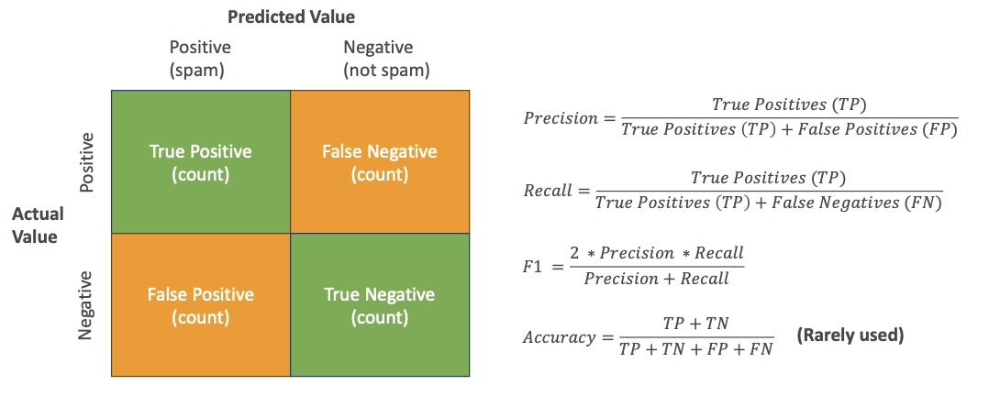
You don't need to remember the exact formula. You barely need to remember what the metrics mean. But what you need to remember is that precision, the recall, the F1, and the accuracy are metrics used to evaluate the accuracy of binary classification and this is what the exam will test you on
When to Use Which Metric
The choice of metric depends on what you're looking for:
"Costly" = Bad Consequences of Wrong Predictions. The "cost" isn't about which feature matters most - it's about which type of wrong answer causes more damage.
- Precision: Best when false positives are costly
- Recall: Best when false negatives are costly
- F1 Score: Gives balance between precision and recall, especially useful for imbalanced datasets
- Accuracy: Rarely used, only for balanced datasets
What do you mean by Balanced and Imbalanced Dataset? (See below)
Balanced vs Imbalanced Datasets:
- Balanced dataset: Has balanced levels of classification for each category
- Note that ==> Spam vs not-spam is typically not a balanced dataset
For more explanation in detail, see this link
AUC-ROC
AUC-ROC stands for Area Under the Curve for the Receiver-Operator Curve. It's more complicated, but just remember the name for the exam.
- Value ranges from 0 to 1, with 1 being the perfect model
- Compares sensitivity (true positive rates) to 1 minus specificity (false positive rates)
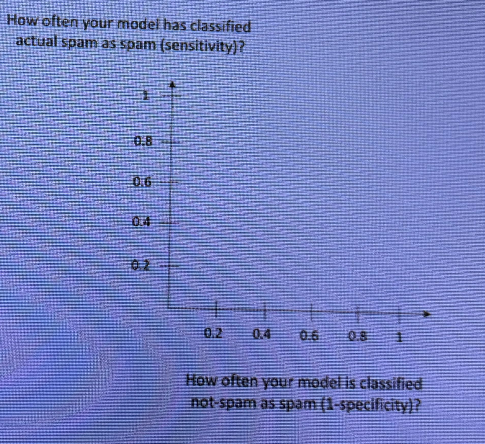
The ROC Curve has two axes: - Vertical axis: How often your model classifies actual spam as spam (sensitivity)
- Horizontal axis: How often your model classifies not-spam as spam (1 - specificity)
About the Curve:
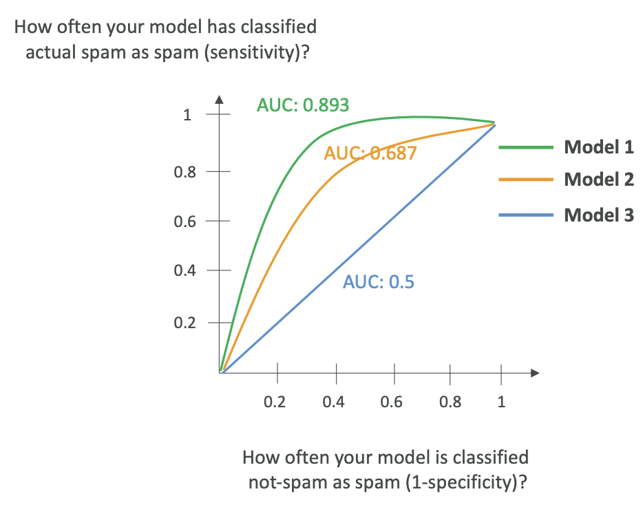
- The curve shows multiple models, where a straight line represents a random model.
- The more accurate your model, the more the curve leans toward the top-left.
- AUC measures how much area is under the curve.
To draw this curve, you look at various thresholds in your model, vary the threshold with multiple confusion matrices, and plot this over time.
AUC-ROC is very useful when comparing thresholds and choosing the right model for binary classification.
To understand more, use this link
Confusion Matrix can be Multi-Dimensional
- The confusion matrix can also be multi-dimensional.
- That means that we can have multiple category for a classification and create a confusion matrix
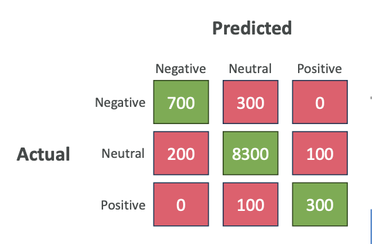
Regression Evaluation
Now let's look at how we evaluate regression models.
Remember, this applies to cases
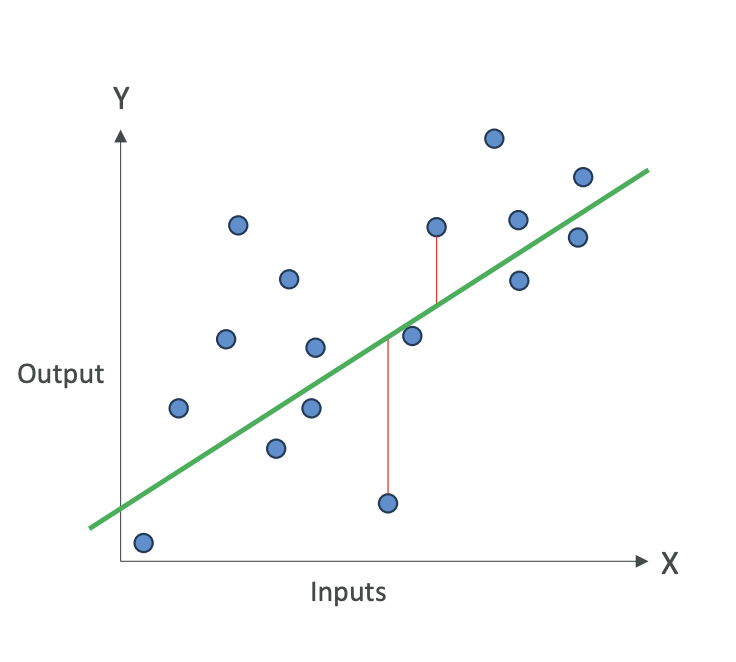
like linear regression where we have data points and we're trying to find a line that represents these data points.
We measure accuracy by measuring the error, the error is the sum of distances between what the predicted value would've been and what the actual value is (See below the formulas for better understanding).
Green Color Line is the predicted value, and the actual values are the Blue Color Dots. Remember ==> Y Hat is the predicted value from the model, Y is the actual value
Regression Metrics
Just remember the names of these metrics, not necessarily how they work:
1. MAE (Mean Absolute Error)
- Computes the difference between predicted and actual values as a mean of absolute values
- Divide by the number of values you have
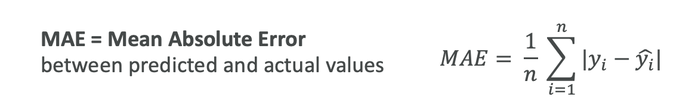
2. MAPE (Mean Absolute Percentage Error)
- Instead of computing actual difference of values, computes how far off you are as a percentage
- Same idea as MAE, but computing the average of percentages
So it is like take the difference (same as MAE) and then you need to divide the wholeby y-hat (predicted value)
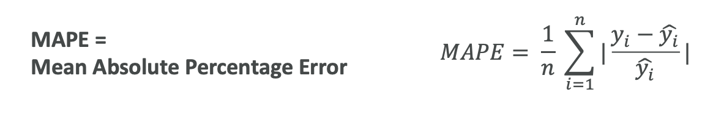
3. RMSE (Root Mean Squared Error)
- The idea is that you're trying to smooth out the error
- RMSE is a way to evaluate the error for your regression
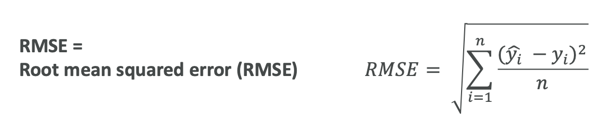
4. R Squared
- Explains the variance in your model
- If R squared is close to 1, your predictions are good
From an exam perspective, remember that MAE, MAPE, RMSE, and R-squared are metrics used to give the quality of a regression and to see if it is going to be acceptable for us or not. From model optimization point of view, we are going to try to minimize these errors' metrics, so that we know our model is accurate
Understanding Regression Metrics with Examples
Let's say you're trying to predict how well students did on a test based on how many hours they studied.
Error Measurement Metrics (MAE, MAPE, RMSE):
- These show how "accurate" the model is
- Example: If your RMSE is 5, that means on average, your model predictions will be about 5 points off from the actual student score
- It is very Easy to quantify and measure
R Squared:
- It Measures variance - a bit more difficult to understand
- For Example: R squared of 0.8 means that 80% of changes in test scores can be explained by how much students studied (which was your input feature)
- The remaining 20% is due to other factors like natural ability or luck
- These other factors may not be captured by your model because they're not features in your model
- Very good R squared close to 1 means you can explain almost everything of the target variable's variance thanks to your input features that you have
Key Takeaways
From an exam perspective:
- For Classification: Use metrics from confusion matrix - accuracy, precision, recall, F1, and AUC-ROC
- For Regression: Use MAE, MAPE, RMSE, and R squared for models that predict continuous values
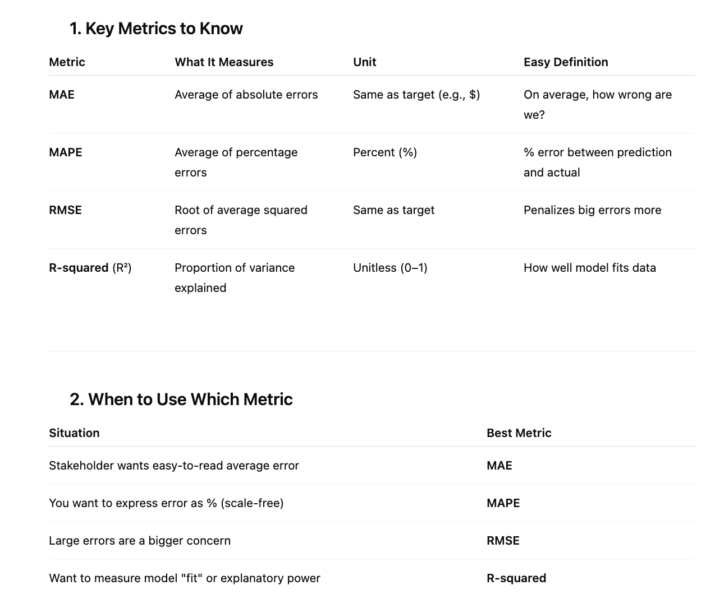
The purpose of a confusion matrix is to evaluate the performance of models that do classifications.
For model optimization, we try to minimize these error metrics to ensure our model is accurate.
You should now understand which metrics are for classification and which are for regression, and have a high-level understanding of what these metrics do.
Sample MCQs for Reference:
Q: A data scientist wants to evaluate a regression model that must heavily penalize large errors. Which metric should they use?
✅ Answer: RMSE
Q: A team wants a regression metric that's easily understandable by a non-technical stakeholder and reports the average error in the same unit as the target variable. Which metric fits best?
✅ Answer: MAE
Q: Which regression metric explains how much of the variability in the data is captured by the model?
✅ Answer: R-squared